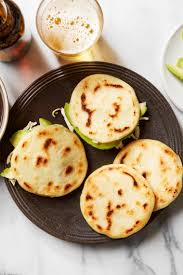

Colombian Arepas

About
Columbian arepas made with mozzarella cheese are quick and easy to make with this recipe. They are usually served for breakfast, as a side dish, or even for a quick meal.
Ingredients
- 1 cup warm water
- 1 cup pre-cooked white cornmeal
- 1 cup shredded mozzarella cheese
- 1 tablespoon butter
>- ½ teaspoon salt, or to taste
- Cooking spray